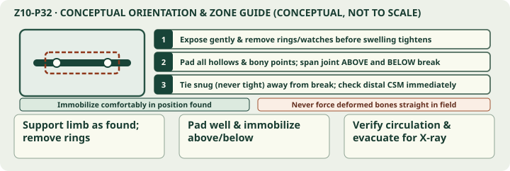

Z10-P32 · Wilderness medicine · New manuscript
Immobilize suspected limb fractures in the position found
Reduce pain, tissue damage, and internal bleeding by splinting suspected broken arms or legs safely without lay straightening.
When it applies · Suspected forearm, wrist, lower-leg, or collarbone fractures with swelling, localized bone tenderness, or inability to use the limb.
Equipment · Soft padding (jackets, foam pad), rigid or semi-rigid supports (commercial SAM splint, folded pad), and wide cloth ties/bandages.

Actions
- Expose the injured area gently to check for open wounds or deformity, remove rings/watches early before swelling tightens, and support the limb steadily in the exact position found—do NOT attempt to snap or force visibly deformed bones straight.[M09]
- Pad all bony prominences and natural hollows generously, secure a splint wide enough to immobilize the joint ABOVE and the joint BELOW the suspected fracture (or bones above/below an injured joint), and tie snug—never tight enough to choke circulation.[M09]
- Check warmth, color, sensation, and gentle toe/finger movement beyond the splint immediately after tying, and arrange clinical X-ray evaluation.[M09]
Failure recognition · Tying narrow paracord directly over the fracture site without padding or attempting to yank an angulated forearm straight in camp.[M09]
Verify · Confirm padding cushions all gaps, ties sit above/below the break (not over it), and circulation/sensation beyond the splint remain intact.[M09, ED]
Stop or change course · Cold pale/blue fingers or toes, numbness, open bone, or severe uncontrollable pain requires loosening tight ties immediately and activating urgent EMS.[M09, T02]
Evidence and editorial notes
- M09 · NIH / MedlinePlus · Fractures (current web edition)
- Section: Suspected Fracture Stabilization and Neurovascular Checks · Conditions: Suspected limb fracture, deformity, or inability to bear weight
Support: Immobilize the injured limb in the position found using padded support without attempting to straighten visibly deformed bones; check circulation, sensation, and movement beyond the injury and arrange evacuation.
Limitations: Open fractures (bone breaking skin) and femur/pelvis injuries carry high bleeding and infection risk requiring urgent EMS. · Conflicting evidence: None; forbids lay fracture reduction in routine field care.
Editorial note: Anchors splinting, neurovascular checks, and evacuation urgency in Z10. · Specialist reviewer: Orthopedics and wilderness medicine
Primary source · checked 2026-11-24 - T02 · American Red Cross · First Aid Steps (current web edition)
- Section: First Aid Steps > Call 9-1-1 · Conditions: Lay emergency response to unresponsiveness, abnormal breathing or severe bleeding
Support: Activate EMS and get needed equipment. Follow dispatcher directions and act within training.
Limitations: Remote locations may delay EMS arrival, requiring sustained stabilization after activation. · Conflicting evidence: None; aligns with NPS-E.
Editorial note: Mandates early emergency activation and dispatcher adherence. · Specialist reviewer: EMS and wilderness medicine
Primary source · checked 2026-11-24
Source lineage · NIH MedlinePlus Fractures; new manuscript · Classification · New manuscript.